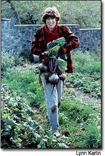
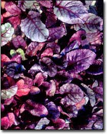
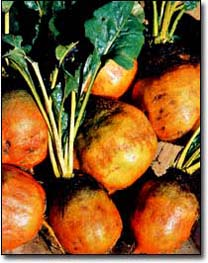
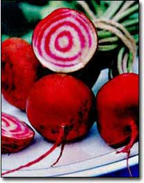
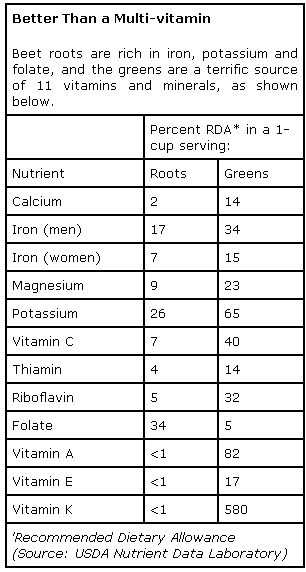
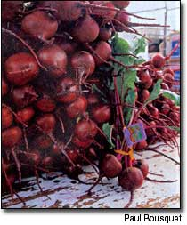
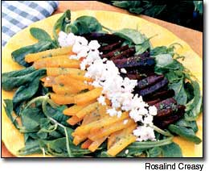

Enjoy one of the sweetest and most nutritious of all vegetables. -
The humble beet has provided earthy Subsistence to cottagers and kings since prehistoric times, and many gardeners and cooks today remain passionate about the crop because of its easy culture, unique flavor and exceptional nutrition.
Baby leaves of beets make a scrumptious addition to your salad mix soon after they sprout in spring. As winter approaches, their hefty roots are one of the last crops to come out of the garden, and they are easy to store through the cold season. And amazingly, beets have twice as much natural sugar as corn, carrots or tomatoes.
This vegetable is widely adapted to most of North America; deep sandy or loamy soil, free of stones and with good drainage, produces the most uniformly shaped beets.
A crop will grow best under cool, moist conditions but, once well-established, will tolerate hot summer weather well - as long as the soil has sufficient moisture for even, steady growth. Beets are quite cold-hardy. They can go into the ground during your first early spring plantings, and the plants can remain in the garden until after fall freezes. Beets remain undamaged even when temperatures drop into the mid-20s.
Another convincing reason to grow beets, in contrast to such root vegetables as carrots or potatoes, is the speed at which they produce a crop. Within three weeks of sowing, you can have young plants cranking out leaves for salads; certainly within five weeks, you can harvest succulent baby beets to cook whole for gourmet fare; and within eight weeks (depending on the variety), you can harvest market-sized beets and lots of leaves for steamed greens.
A SUPER-NUTRITIOUS CHOICE
Nutritionally speaking, beets are exceptional sources of essential vitamins and minerals. They are rich in calcium, iron, magnesium, potassium, vitamin C, thiamin, riboflavin, vitamin A and vitamin K (see "Better Than a Multi-vitamin," right). Beets store most of these nutrients in their leaves - which beet-eaters sometimes neglect - but recent investigations into their nutritional make-up bode well for the roots as well. Irwin Goldman, a beet geneticist at the University of Wisconsin-Madison, has shown that beet greens and beet roots are one of the best dietary sources of folate, which is one of the B vitamins.
FROM THE TOPS DOWN
Beet leaves, also called "tops" or "greens" in gardening parlance, have been highly praised for their taste and high nutritional content since humans first cultivated this vegetable in pre-Roman times. Goldman says that during the time of the Romans, people selected the progenitor of the modern beet from a wild plant in the Mediterranean region to use as a leaf vegetable. The plant probably resembled the Swiss chard of today, which may be a bridge crop between the original leafy beet cultivated from the wild and today's modern table beets.
The practice of eating fully grown beet greens as a cooked vegetable is not nearly as widespread as it was a couple of generations ago, but it still has devotees. Mary Ballon of West Coast Seeds in British Columbia is a true lover of old-fashioned cooked beet greens. "I'd grow a crop of beets just to harvest their greens," she says. "We sometimes pull plants as thinnings when the leaves are about 5 inches tall, and steam the little root and the leaves all at once." Ballon also says steamed beet greens surpass their close relative, Swiss chard, in flavor. For beet varieties with excellent greens for cooking, she recommends 'Early Wonder Tall Top' and 'Lutz Greenleaf,' also called 'Winterkeeper.' (For a list of sources for the varieties mentioned in this story, see "Beet Seed Sources," Page 94.)
A NEW LOOK FOR AN OLD CROP
Since growers for farmer's markets and natural food stores began selling pre-made salads in the last 10 to 15 years, the search has been on for crops that grow quickly and produce large quantities of succulent, tasty leaves that don't wilt too fast. Young beet leaves turned out to be perfect. They are juicy and tender with a piquant flavor and have great eye-appeal: Their green leaves contrast nicely with their red stems and leaf veins. Best when harvested at no more than 3 1/2 inches long and 2 inches wide, they stand up well to repeated cuts over a long period of time.
Lots of market farmers rely on 'Red Ace' as their main beet variety for salad mixes, as many of the traits that make it popular with commercial growers - bright green leaves with brilliant red stems on upright, vigorous-growing plants - also make it a good choice for home gardeners. Another good choice for home gardeners is 'Pronto,' which sprouts erect tops with good color and makes a beautiful baby-style beet root for a true dual-purpose crop.
If you think you don't like the taste of red beets, you might want to try 'Golden' beets. They make an attractive addition to the table and their flavor can be quite mild and sweet. But, their seed often germinates poorly and seedlings grow slowly, so if you grow 'Golden' beets, you should plant them more thickly and give them a little more attention throughout the season. If you want to add some color to your salad mixes, be sure to try the `Bull's Blood' beet, a British heirloom grown almost exclusively for its intensely maroon-red leaves. While most beet varieties exhibit some red pigmentation in their foliage, 'Bull's Blood' stands out for its unique, solid, blood-red leaf color. Market farmer Eliot Coleman, author of Four Season Harvest, has pioneered the use of cold-hardy crops to produce vegetables in cold frames and walk-in tunnel greenhouses throughout the winter at his Four Season Farm in Harborside, Maine. He has found 'Bull's Blood' to be one of the most cold-hardy of his crops.
Coleman says he loves `Bull's Blood' for two reasons. First, he praises the color it adds to the salad mix he sells. "It has the most magnificent deep-maroon color that I've ever seen," he says, "and can survive and produce in unheated cold frames and walk-in tunnel greenhouses throughout the harsh Maine winters." It survives when the weather dips well below freezing, and when temperatures climb above freezing, `Bull's Blood' is among the first crops to produce. "As long as it stays above 32 degrees, it produces enough to allow us to harvest every three weeks," Coleman says.
CULTIVATING BEETS
Growing beets successfully depends on following a few simple rules. Firstly, sow beets as soon as spring weather becomes "settled" in your area. Home gardeners should plant 12 to 15 seeds per foot. Thin to about one plant every 2 to 3 inches after all of the seedlings emerge. Even if your beet plants seem like they're a little crowded as they grow, don't worry-they will push each other apart in the row as their roots expand in size. Diseases aren't usually a problem in the home garden, but to help prevent them, plant your beets in an airy, exposed section of your garden with lots of well-aged compost worked into the soil. At harvest, pull beets on a dry day and cut off the tops near the crown. Don't wash or rinse off the roots. Put them into a plastic bag with a number of small holes, and put these in a cold root cellar or in the crisper of the refrigerator. You'll be amazed at how long they'll last!
One of the secrets of growing great-tasting beets is to choose a naturally sweet variety and subject it to as little water stress as possible. Beets grown with uneven watering may become stronger flavored and almost bitter, and can develop white rings in the flesh. Geosmin, a naturally occurring flavor compound in beets, gives the vegetable its characteristic flavor. Geosmin is more prominent in some varieties and can become more noticeable after a beet crop is environmentally stressed. Food scientists at Washington State University say beet varieties that get high marks for flavor have a good sugar/geosmin balance and better-than-average stress tolerance.
Gardeners who take beets seriously always name the same favorite varieties: 'Red Ace,' `Chioggia' and Lutz Greenleaf' get the most praise for pure eating pleasure. Steve Bellavia, trial manager at Johnny's Selected Seeds in Maine, is especially fond of 'Red Ace.' He says, `It's our all-around favorite. It's flavorful, productive, dependable and attractive."
Many gardeners also grow the Italian heirloom 'Chioggia' for the beautiful bull's-eye circular pattern in its flesh (see photo, Page 92). Its flavor is mild and quite sweet, making it especially popular at farmer's markets - people who try it for its exceptional looks keep coming back for more once they've tasted it.
'Lutz Greenleaf' is truly unique in appearance: It has heart-shaped roots and large green leaves with little or no red coloring. Not only does Lutz Greenleaf' win praise for its exceptionally tender and tasty beet greens, it also s a top choice for great-tasting roots. Steve Peters, commercial seed manager for Seeds of Change in New Mexico and a self-avowed beet lover, sums it up best: "'Lutz is consistently the best-tasting beet in our trials. It has the right balance between earthy and sweet, and a rich, complex, satisfying flavor that lingers in your mouth well after the initial burst of sweetness."
Whether you prefer your beets as a root vegetable, a cooked green vegetable, or as an attractive addition to your salad mix, it's time to explore this nutritious, delicious and versatile crop.
John Navazio, Ph.D., is the owner of Seed Movement, an organic seed company in Port Townsend, Washington. He also is director of education and research at the Organic Seed Alliance in Port Townsend.
Beet Seed Sources
The numbers listed after the following beet varieties designate which seed companies sell them:
`Bull's Blood': 1, 2, 3, 4, 5
`Chioggia': 1, 2, 3, 4, 5
`Early Wonder Tall Top': 1, 5
'Golden': 1, 2, 4, 5
'Lutz Greenleaf'/`Winterkeeper': 2, 3, 5
`Pronto': 4
'Red Ace': 1, 5
1. Johnny's Selected Seeds 955 Benton Ave. Winslow, ME 04901 (207)861-3901 www.johnnyseeds.com
2. The Cook's Garden PO. Box 1889 Southampton, PA 18966 (800) 457-9703 www.cooksgarden.com
3. Seeds of Change PO. Box 15700 Santa Fe, NM 87592 (888) 762-7333 www.seedsofchange.com
4. John Scheepers Kitchen Garden Seeds 23 Tulip Drive Bantam, CT 06750 (860) 567-6086 www.kitchengardenseeds.com
5. West Coast Seeds 3925 64th St. RR #1 Delta, BC V4K 3N2 (604) 952-8820 www.westcoastseeds.com
Of all the root vegetables, beets usually are described as the most "earthy tasting." This flavor comes from a compound called geosmin. Researchers are unsure whether the beet produces geosmin, or if a microbe called an actinomycete that lives in symbiosis with the beet in the soil is responsible. Either way, geosmin is a natural part of the beet experience. Without it, a beet's flavor would be shallow and flat.
Baked Beet Salad
4 medium-sized beets
4 handfuls salad greens, such as mache spinach, lettuce, tatsoi, mustard or baby beet leaves
1/4 pound feta cheese, crumbled
Vinaigrette Dressing.
1 tablespoon rice wine vinegar
1/2 teaspoon Dijon-style mustard
4 tablespoons extra-virgin olive oil
2 tablespoons finely chopped fresh chervil or 1 tablespoon tarragon
Salt and freshly ground black pepper
Remove the tops of the beets and set aside to use in another dish. Wash the roots and put them in a casserole dish with a lid. Bake at 300 degrees for about 1 1/2 hours, or until tender. (If you are baking different-colored beets, cook them in separate casserole dishes, or the colors will bleed.) Remove the dish from the oven, let the beets cool, then peel and thinly slice them into julienne. Refrigerate until ready to use. Toss the greens with three-quarters of the vinaigrette and arrange them on a serving plate. Put the beets in a small bowl, pour the rest of the dressing over them and stir to coat the beets. Arrange the beets over the greens, and sprinkle feta cheese over the beets. Serves 4 to 6.
Mother Earth News
|
 These hefty 'Red Ace' beets provide delicious roots and highly nutritious greens. |
 Beautiful 'Bull's Blood' beet leaves give salads a splash of color and a nutritional boost. |
 Golden' beets taste mild and sweet, but don't produce as well as red varieties. |
|
 With their unique bulls-eye pattern, 'Chioggia' beets look great on the plate. |
 |
 |
|
 |
|
|